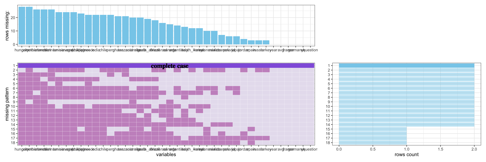
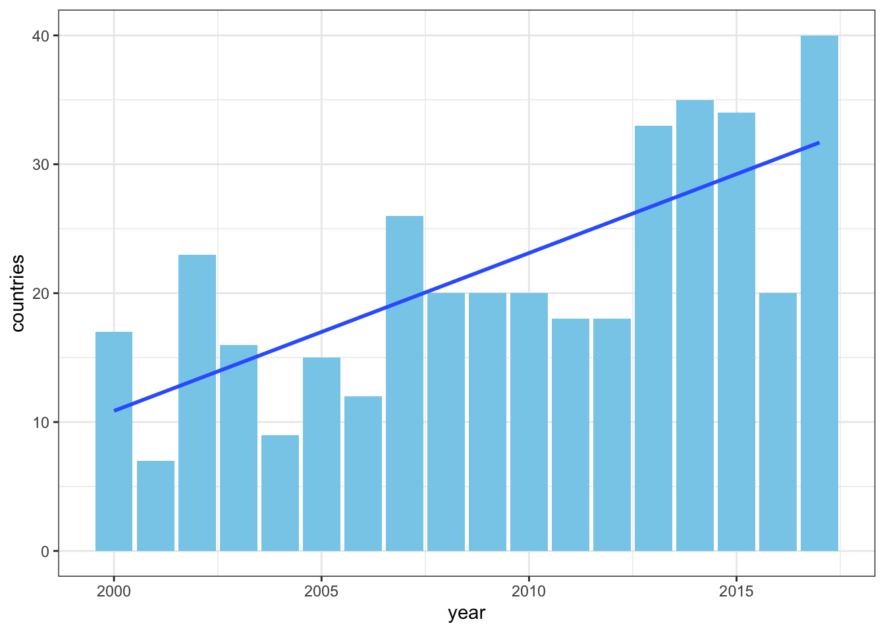

Chapter 4 Missing values
Our dataset has no missing pattern:
Every data entry in the dataset has been accurately recorded and shows the reliability and credibility of this dataset.To fulfill this chapter,we will be using the trumpworld_polls dataset for the missing value analysis.

According to introduction, the trumpworld_polls dataset comes from Pew Research Center, who has conducted a survey in several countries since 2002. At a glance of the graph, we observed that:
- The dataset is small and the missing patterns are evenly distributed. Thus, there is no much information on the missing patterns because they are not statistically significant to draw any conclusion.
To learn more about why the data shows the pattern, we find it strange that it is at most 20 years from 2002, while we got 32 rows of data. We find that some years are repeated, and this can be explained in “question” column, which show that there are questions, one for “Favorable view of US” and the other for “Trust President”. The survey started from 2000 to 2017, 18 years in total. In 2000,2002,2004 they asked about “Trust President” and in 2001 they asked about “Favorable view of US”. In years after 2005, they asked both question. So, they actually chose different countries every year, and given that the first few years they might only ask one question, which made the NA count once that year. This perfectly explains observation 1.
It’s logical then to see if the survey is trying to enlarge its country size, and we got our second observation:
- The poll is trying to include more countries and thus it is more likely to have less NA when the time is closer to 2017. This can be show in graph below, in fact, the only complete case is 2017, which is the latest year.

So, what’s the process of adding these countries? What’s the order?
- The country who has close political affiliations with the US and are rather developed tend to have less NA values: Japan, Russia, France, Germany and UK are some of the countries that has the least missing values.
In fact, the order is mainly chosen by Pew, and according to The R data source, they also don’t know the order of Pew.
If we observe the year-countries barplot, there is a gap in 2006-2007 and 2012-2013, when some countries were added since then. We try to classify the order according to these gap:
## [1] "year" "avg" "france" "germany" "italy" "spain" "uk" "russia" "jordan"
## [10] "turkey" "question"## [1] "poland" "indonesia" "japan" "lebanon" "mexico"## [1] "canada" "greece" "italy" "australia" "india" "philippines" "south_korea"
## [8] "israel" "ghana" "kenya" "nigeria" "senegal" "south_africa" "argentina"
## [15] "brazil" "chile" "venezuela"We see that Pew firstly focus on European countries, and then partly Asian countries, and lastly including countries from Africa and America.